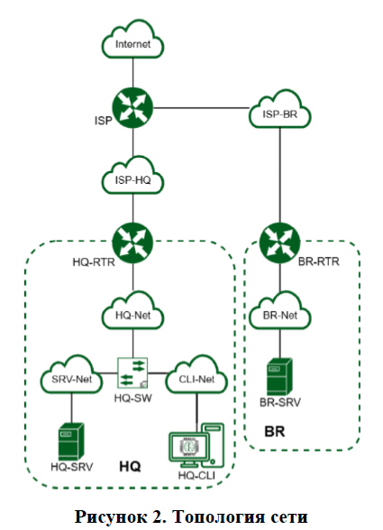

¶ Модуль 2. Организация сетевого администрирования
Необходимо разработать и настроить инфраструктуру информационно-коммуникационной системы согласно предложенной топологии (см. Рисунок 2).
Для модуля 2 используется отдельный стенд. Инструкция по настройке стенда для технических администраторов площадки в отдельном файле.
В стенде преднастроены:
- IP-адреса, маски подсетей и шлюзы по умолчанию
- Сетевая трансляция адресов
- IP туннель
- Динамическая маршрутизация
- Созданы пользователи sshuser на серверах и net_admin на маршрутизаторах, им предоставлены административные привилегии
- Порты ssh на серверах
- DHCP-сервер
- DNS-сервер
- Сервер HQ-SRV имеет три дополнительных накопителя размером 1ГБ
По каждому пункту задания, требующего отчёт, составить текстовый документ, название которого должно содержать индекс пункта и краткое описание. Текстовый документ должен содержать текстовую информацию и может включать снимки экрана, кадрированные таким образом, чтобы относящаяся к выполнению задания информация на снимках была читаемой.
Итоговый отчет по окончании работы следует сохранить на диске рабочего места и задать имя файла - ФамилияУчастникаМодуль2 без учёта расширения.

1. Настройте контроллер домена Samba DC на сервере BR-SRV:
- Имя домена au-team.irpo
- Введите в созданный домен машину HQ-CLI
- Создайте 5 пользователей для офиса HQ: имена пользователей формата hquser№ (например hquser1, hquser2 и т.д.)
- Создайте группу hq, введите в группу созданных пользователей
- Убедитесь, что пользователи группы hq имеют право аутентифицироваться на HQ-CLI
- Пользователи группы hq должны иметь возможность повышать привилегии для выполнения ограниченного набора команд: cat, grep, id. Запускать другие команды с повышенными привилегиями пользователи группы права не имеют.
2. Сконфигурируйте файловое хранилище на сервере HQ-SRV:
- При помощи двух подключенных к серверу дополнительных дисков размером 1 Гб сконфигурируйте дисковый массив уровня 0
- Имя устройства – md0, при необходимости конфигурация массива размещается в файле /etc/mdadm.conf
- Создайте раздел, отформатируйте раздел, в качестве файловой системы используйте ext4
- Обеспечьте автоматическое монтирование в папку /raid
3. Настройте сервер сетевой файловой системы (nfs) на HQ-SRV:
- В качестве папки общего доступа выберите /raid/nfs, доступ для чтения и записи исключительно для сети в сторону HQ-CLI
- На HQ-CLI настройте автомонтирование в папку /mnt/nfs
- Основные параметры сервера отметьте в отчёте
4. Настройте службу сетевого времени на базе сервиса chrony на маршрутизаторе ISP:
- Вышестоящий сервер ntp на маршрутизаторе ISP - на выбор участника
- Стратум сервера - 5
- В качестве клиентов ntp настройте: HQ-SRV, HQ-CLI, BR-RTR, BR-SRV.
5. Сконфигурируйте ansible на сервере BR-SRV:
- Сформируйте файл инвентаря, в инвентарь должны входить HQ-SRV, HQ-CLI, HQ-RTR и BR-RTR
- Рабочий каталог ansible должен располагаться в /etc/ansible
- Все указанные машины должны без предупреждений и ошибок отвечать pong на команду ping в ansible посланную с BR-SRV.
6. Разверните веб приложение в docker на сервере BR-SRV:
- Средствами docker должен создаваться стек контейнеров с веб приложением и базой данных
- Используйте образы site_latestи mariadb_latest располагающиеся в директории docker в образе Additional.iso
- Основной контейнер testapp должен называться tespapp
- Контейнер с базой данных должен называться db
- Импортируйте образы в docker, укажите в yaml файле параметры подключения к СУБД, имя БД - testdb, пользователь test с паролем P@ssw0rd, порт приложения 8080, при необходимости другие параметры
- Приложение должно быть доступно для внешних подключений через порт 8080
7. Разверните веб приложение на сервере HQ-SRV:
- Используйте веб-сервер apache
- В качестве системы управления базами данных используйте mariadb
- Файлы веб приложения и дамп базы данных находятся в директории web образа Additional.iso
- Выполните импорт схемы и данных из файла dump.sql в базу данных webdb
- Создайте пользователя webс паролем P@ssw0rd и предоставьте ему права доступа к этой базе данных
- Файлы index.php и директорию images скопируйте в каталог веб сервера apache
- В файле index.php укажите правильные учётные данные для подключения к БД
- Запустите веб сервер и убедитесь в работоспособности приложения
- Основные параметры отметьте в отчёте
8. На маршрутизаторах сконфигурируйте статическую трансляцию портов:
- Пробросьте порт 8080 в порт приложения testapp BR-SRV на маршрутизаторе BR-RTR, для обеспечения работы приложения testapp извне
- Пробросьте порт 8080 в порт веб приложения на HQ-SRV на маршрутизаторе HQ-RTR, для обеспечения работы веб приложения извне
- Пробросьте порт 2026 на маршрутизаторе HQ-RTR в порт 2026сервера HQ-SRV, для подключения к серверу по протоколу ssh из внешних сетей
- Пробросьте порт 2026 на маршрутизаторе BR-RTR в порт 2026сервера BR-SRV, для подключения к серверу по протоколу ssh из внешних сетей.
9. Настройте веб-сервер nginx как обратный прокси-сервер на ISP
- При обращении по доменному имени web.au-team.irpo у клиента должно открываться веб приложение на HQ-SRV
- При обращении по доменному имени docker.au-team.irpo клиента должно открываться веб приложение testapp
10. На маршрутизаторе ISP настройте web-based аутентификацию:
- При обращении к сайту web.au-team.irpo клиенту должно быть предложено ввести аутентификационные данные
- В качестве логина для аутентификации выберите WEBс паролем P@ssw0rd
- Выберите файл /etc/nginx/.htpasswd в качестве хранилища учётных записей
- При успешной аутентификации клиент должен перейти на веб сайт.
11. Удобным способом установите приложение Яндекс Браузер на HQ-CLI
- Установку браузера отметьте в отчёте.